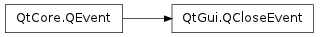

QCloseEvent ¶

Detailed Description ¶
The PySide.QtGui.QCloseEvent class contains parameters that describe a close event.
Close events are sent to widgets that the user wants to close, usually by choosing “Close” from the window menu, or by clicking the X title bar button. They are also sent when you call QWidget.close() to close a widget programmatically.
Close events contain a flag that indicates whether the receiver wants the widget to be closed or not. When a widget accepts the close event, it is hidden (and destroyed if it was created with the Qt.WA_DeleteOnClose flag). If it refuses to accept the close event nothing happens. (Under X11 it is possible that the window manager will forcibly close the window; but at the time of writing we are not aware of any window manager that does this.)
The event handler QWidget.closeEvent() receives close events. The default implementation of this event handler accepts the close event. If you do not want your widget to be hidden, or want some special handing, you should reimplement the event handler and PySide.QtCore.QEvent.ignore() the event.
The closeEvent() in the Application example shows a close event handler that asks whether to save a document before closing.
If you want the widget to be deleted when it is closed, create it with the Qt.WA_DeleteOnClose flag. This is very useful for independent top-level windows in a multi-window application.
PySide.QtCore.QObject s emits the PySide.QtCore.QObject.destroyed() signal when they are deleted.
If the last top-level window is closed, the QApplication.lastWindowClosed() signal is emitted.
The PySide.QtCore.QEvent.isAccepted() function returns true if the event’s receiver has agreed to close the widget; call PySide.QtCore.QEvent.accept() to agree to close the widget and call PySide.QtCore.QEvent.ignore() if the receiver of this event does not want the widget to be closed.
See also
QWidget.close() QWidget.hide() QObject.destroyed() QCoreApplication.exec() QCoreApplication.quit() QApplication.lastWindowClosed()
- class PySide.QtGui. QCloseEvent ¶
-
Constructs a close event object.
See also
PySide.QtCore.QEvent.accept()